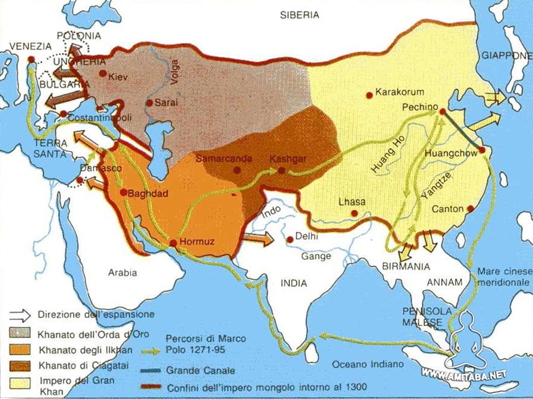

I Mongoli
L'impero che collegò Oriente e Occidente

1206 - 1368 | Da Gengis Khan all'Impero più vasto della storia
I Numeri dell'Impero
L'Ascesa dei Mongoli
🏹 Gengis Khan: Unificatore delle Steppe
Nel 1206, Temujin riunì tutte le tribù mongole sotto un unico comando e fu proclamato Gengis Khan ("Sovrano Universale"). Creò un esercito disciplinato, organizzato in decine, centinaia, migliaia e tumen (10.000 uomini).
Quali furono le innovazioni di Gengis Khan?
- Esercito meritocratico: promozioni basate sul merito, non sulla nobiltà
- Codice Yasa: leggi severe contro tradimenti e saccheggi
- Arco composito: armi potentissime utilizzate da cavallo
- Tolleranza religiosa: rispetto per tutte le fedi
Tecniche militari: Finto ritiro, accerchiamento, arcieri a cavallo.
🗺️ L'Impero più Vasto della Storia
Dalla Cina all'Europa orientale, dalla Siberia all'India del nord. I successori di Gengis Khan, come Ögedei e Kublai Khan, espansero l'impero fino a includere Corea, Vietnam, Persia e Russia.
Quali territori conquistarono?
- Impero Mongolo: La Cina (dinastia Yuan), Corea
- Ilkhanato: Persia, Mesopotamia
- Khanato dell'Orda d'Oro: Russia, Ucraina
- Khanato di Chagatai: Asia centrale
🕊️ La Pace Mongola e la Via della Seta
La Pax Mongolica (pace mongola) garantì sicurezza sulle rotte commerciali tra Europa e Asia. Mercanti, ambasciatori e viaggiatori come Marco Polo poterono attraversare l'impero senza timore di banditi.
Cosa permise la Pax Mongolica?
- Sicurezza della Via della Seta: commercio fiorì come mai prima
- Scambi culturali: tecnologie (carta, polvere da sparo, bussola) arrivarono in Europa
- Esplorazioni: viaggi di Marco Polo, Giovanni da Pian del Carpine
- Sistema Yam: rete di staffette postali efficientissima
🗺️ L'Impero Mongolo alla sua massima espansione

Come riuscirono a conquistare così tanti territori?
I mongoli erano cavalieri eccezionali fin dall'infanzia. Usavano tattiche innovative come il finto ritiro e l'accerchiamento. Erano tolleranti verso le religioni locali, riducendo le ribellioni, e adottavano tecnologie nemiche (es. macchine d'assedio cinesi).
Approfondimenti
- Esercito decimale: organizzazione in decine, centinaia, migliaia, tumen (10.000)
- Codice Yasa: legge severa che proibiva il saccheggio non autorizzato
- Yam (staffetta postale): cavalieri cambio-cavallo ogni 30-50 km, messaggi velocissimi
- Tolleranza religiosa: libertà di culto per tutte le religioni
- Via della Seta sicura: commercio di seta, spezie, porcellane, pietre preziose
- Scambi tecnologici: carta, polvere da sparo, bussola, stampa
- Merci dall'Europa: lana, vetro, ambra, schiavi
- Frammentazione: divisione in quattro khanati dopo la morte di Gengis Khan
- Conflitti interni: lotte per la successione
- Peste nera: diffusione lungo le rotte commerciali indebolì l'impero
- Ribellioni: Cina (dinastia Ming), Russia, Persia si liberarono
📖 Ripassa Prima del Quiz!
Leggi attentamente queste informazioni e prova a rispondere alle domande
🏹 L'Impero Mongolo
📍 Domanda 1: Chi fu Gengis Khan?
Risposta: Il capo che unificò le tribù mongole nel 1206 e fondò l'impero.
📍 Domanda 2: Cosa significa "Gengis Khan"?
Risposta: "Sovrano Universale".
📍 Domanda 3: Quali territori conquistarono?
Risposta: Cina, Corea, Asia centrale, Persia, Russia, Europa orientale.
📍 Domanda 4: Cos'era la Pax Mongolica?
Risposta: Un periodo di pace e sicurezza sulle rotte commerciali.
⚔️ Esercito e Leggi
📍 Domanda 5: Come era organizzato l'esercito?
Risposta: In decine, centinaia, migliaia e tumen (10.000 uomini).
📍 Domanda 6: Cos'era il Codice Yasa?
Risposta: Il codice di leggi mongolo che proibiva tradimenti e saccheggi.
📍 Domanda 7: Cos'era il sistema Yam?
Risposta: Una rete di staffette postali per comunicazioni veloci.
🌍 Impatto sulla Storia
📍 Domanda 8: Come influenzarono la Via della Seta?
Risposta: La resero sicura e prospera, favorendo scambi commerciali e culturali.
📍 Domanda 9: Quali tecnologie arrivarono in Europa grazie ai mongoli?
Risposta: Carta, polvere da sparo, bussola, stampa.
📍 Domanda 10: Quale famoso viaggiatore attraversò l'impero?
Risposta: Marco Polo.
📚 Fonti Consultate
- Treccani - Enciclopedia Italiana
- Focus Junior - Spiegazioni per ragazzi
- Geopop - Approfondimenti storici
- Libro di storia - Contesto storico